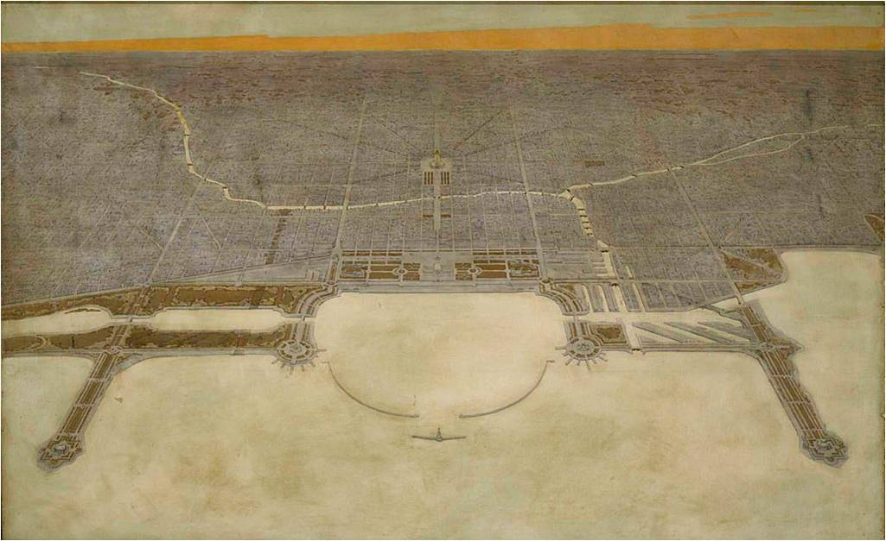
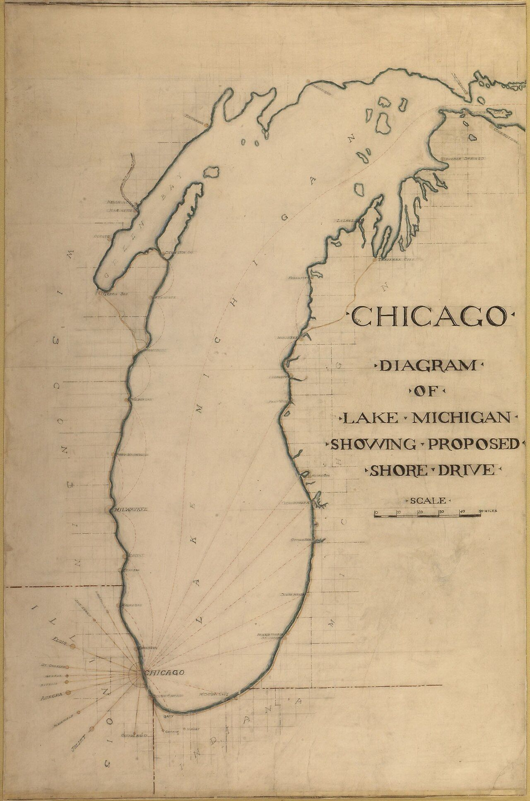
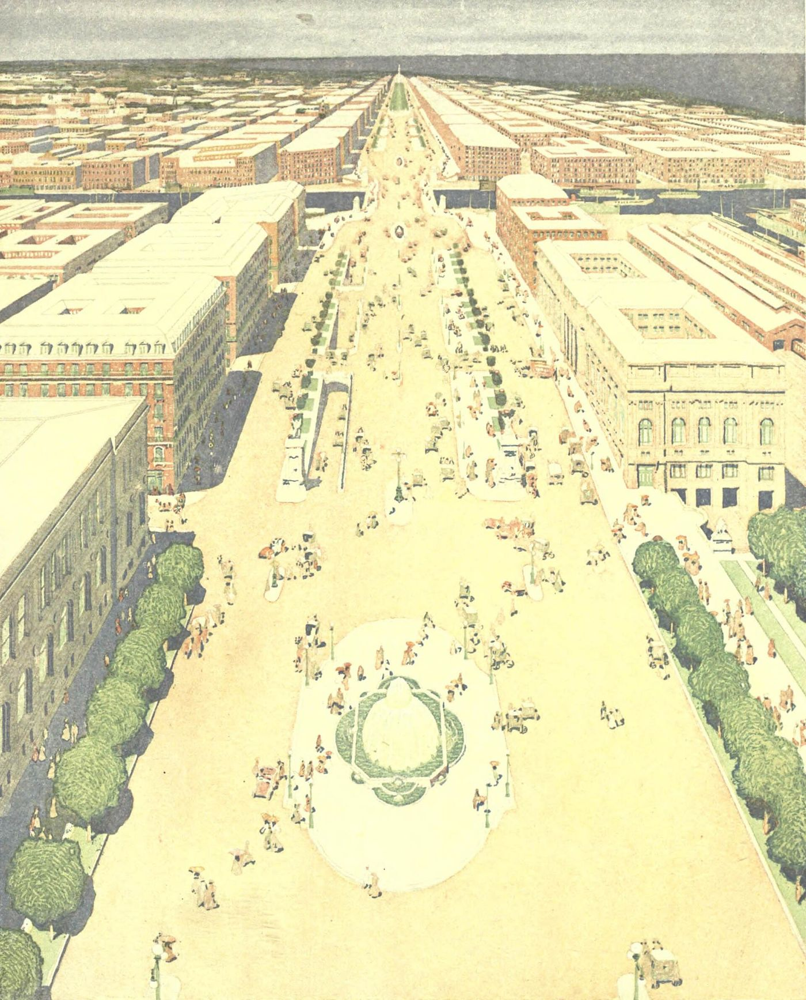
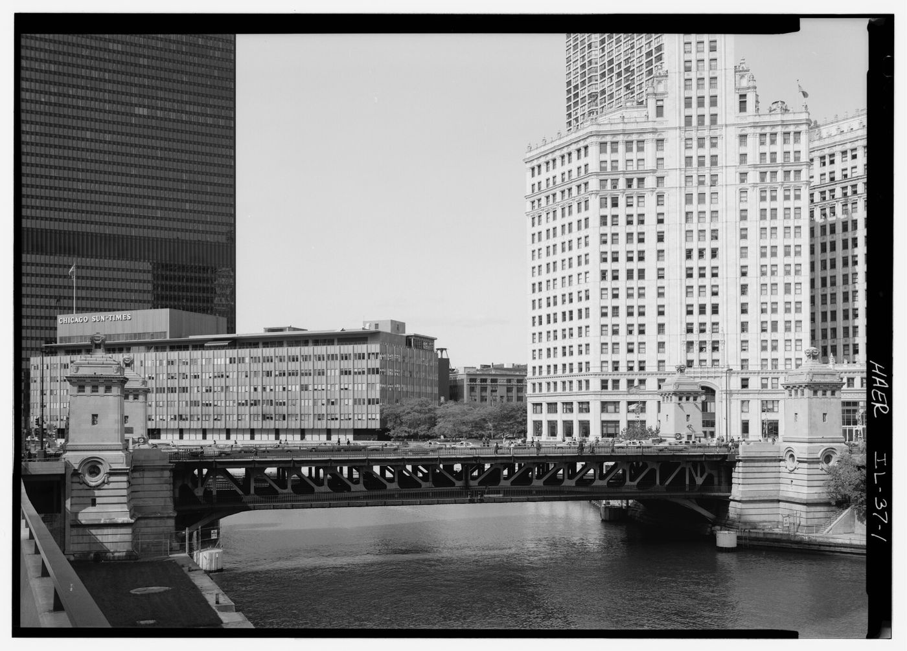
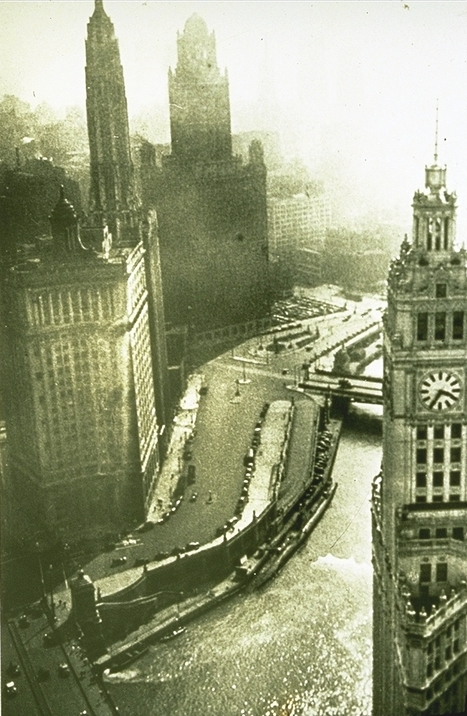
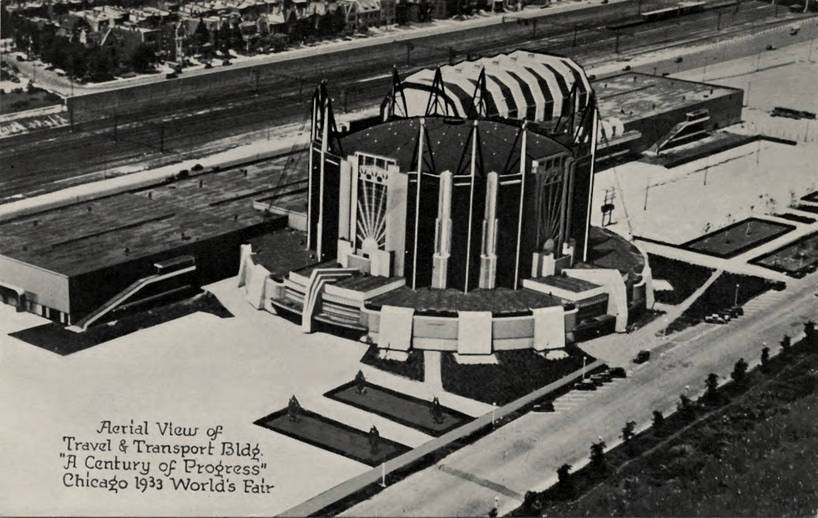
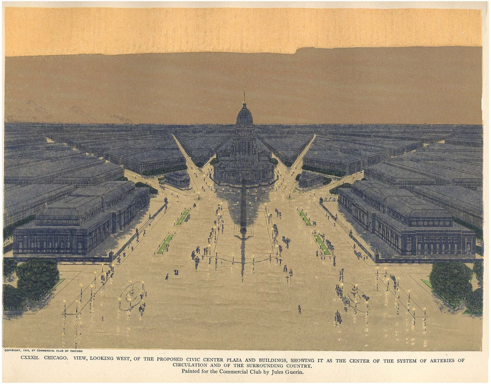
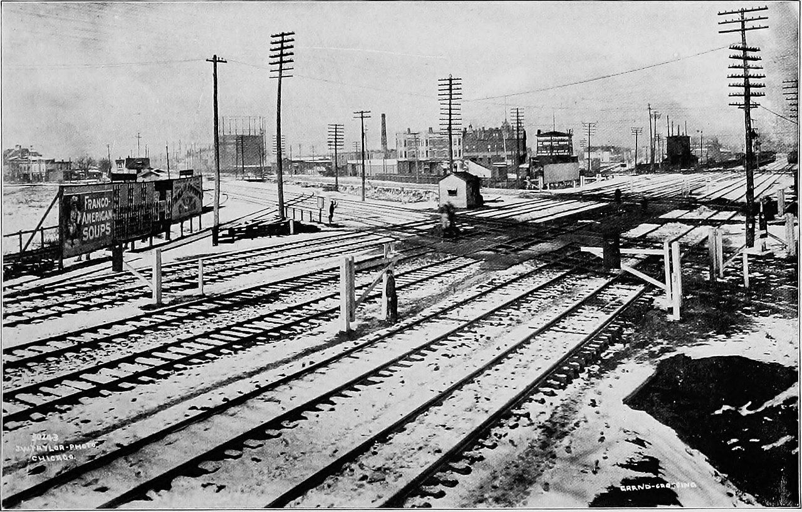

In 1909, Daniel Burnham and Edward Bennett published the Plan of Chicago. It was commissioned by the Commercial Club of Chicago, a private civic organization, not the city government. It was a plan made by citizens who believed their city could be great and then did the work to make it happen.
The plan proposed a continuous lakefront park system, a network of regional highways and rail connections, a civic center anchored by monumental public buildings, and a system of diagonal boulevards connecting the entire metropolitan area. It was the first comprehensive plan for an American city. It was 164 pages, illustrated with renderings by Jules Guerin that made people believe a flat prairie city on the edge of a lake could rival Paris.
By the time the Commercial Club came to him, Burnham had spent fifteen years proving, in one city after another, that the thing could be done. In 1893 he had been Director of Works for the World's Columbian Exposition, given twenty-six months to build a white classical city on a Lake Michigan swamp, and delivering it to 27 million visitors. In 1902 he led the McMillan Commission that rescued Washington, D.C.'s Mall from railroad tracks and returned the capital to L'Enfant's plan. In 1903 he produced the Group Plan for Cleveland's civic center, in 1905 a comprehensive plan for San Francisco, and in the same year plans for Manila and the new summer capital at Baguio in the Philippines. He refused a fee for the San Francisco and Philippine work, and he refused one for Chicago too. The greatest planning documents in American history were produced as civic gifts.
The commission began in 1906 with the Merchants Club, a group of younger Chicago businessmen, which merged into the Commercial Club the following year. The club's members raised the production budget privately, and for roughly thirty months Burnham and his co-author Edward H. Bennett worked in a penthouse studio built on the roof of the Railway Exchange Building on Michigan Avenue, with the lakefront they intended to remake spread out below the windows. Jules Guerin, the delineator whose hazy gold-and-blue renderings had already defined the look of Beaux-Arts ambition, painted the plates. Charles Moore, who would later write Burnham's biography, edited the text.
The book was published on July 4, 1909, in an edition of 1,650 copies, and the date was not an accident. The Commercial Club presented the plan to the city as a patriotic instrument, an argument that the American city could be as deliberately made as the American constitution. Five weeks earlier and 1,700 miles away, Seattle had opened the Alaska-Yukon-Pacific Exposition, its own announcement of civic capability. The two cities stood, for one summer, at the same fork in the same road.

Most of the lakefront. Grant Park, Burnham Park, the Museum Campus, Northerly Island, the continuous shoreline parkland from Jackson Park to Lincoln Park. Before the plan, the lakefront was railroad yards and industrial fill, and it stayed public at all only because Montgomery Ward had spent twenty years suing to keep Grant Park "forever open, clear and free." Burnham's plan turned that legal victory into a design, and the design into 26 miles of public parkland. It is the most valuable public amenity in the Midwest.
The boulevard system. Congress Parkway, Michigan Avenue (widened and rebuilt), Ogden Avenue, the diagonal streets that cut through the grid. Wacker Drive, the double-decked riverside boulevard, was built in the 1920s specifically because the plan called for it.
The regional highway network. The plan anticipated the need for high-speed arterial roads connecting Chicago to its suburbs decades before the interstate system. Many of the routes Burnham proposed became the expressways built in the 1950s and 1960s. The outer green ring fared nearly as well: the Forest Preserve District of Cook County, organized in 1915 on the plan's logic that the region's woods should be publicly held before the subdivisions reached them, protects nearly 70,000 acres today.
The pace tells the story. The city adopted the plan and then built against it for a generation:
1909. The City Council creates the Chicago Plan Commission, 328 members, chaired by Charles H. Wacker.
1916. Municipal Pier opens, the recreational pier the plan put on the lakefront. Chicago renames it Navy Pier in 1927.
1920. The Michigan Avenue bridge opens, connecting the north and south sides exactly as Plate CXII drew it. North Michigan Avenue becomes the Magnificent Mile.
1925. Union Station opens, consolidating the rail terminals the plan said were strangling the West Loop.
1926. The first double-deck section of Wacker Drive replaces the South Water Street produce market along the river.
1930. The city finishes straightening the South Branch of the Chicago River, moving the channel a quarter mile to untangle the rail approaches.
1933. The Century of Progress world's fair opens on Northerly Island and the Burnham Park lakefill, land that exists because the plan said to make it.




26 miles of continuous lakefront parkland (built per the plan)
1,650 copies printed of the original edition, published July 4, 1909
$0 charged by Burnham for roughly thirty months of work
328 members of the Chicago Plan Commission created to execute it
1911 Wacker's Manual distributed to every 8th grader in the city
$10 billion+ estimated current value of lakefront park system
The civic center. Burnham proposed a monumental government complex west of the Loop at Congress and Halsted, anchored by a domed city hall that would have rivaled the U.S. Capitol. It was never built. Chicago's civic buildings are scattered across downtown with no coherent center.

The complete diagonal boulevard system. Burnham proposed a network of diagonal avenues radiating from the civic center, cutting efficient paths through the grid. Only fragments were built. Ogden Avenue was one. Most of the diagonals were blocked by property owners who did not want their lots bisected.
The outer park ring. The plan called for a system of forest preserves and regional parks encircling the metropolitan area. The Cook County Forest Preserves were partially inspired by this, but the full ring was never completed. Gaps remain, particularly on the south and west sides.
The lakefront south of Jackson Park. Burnham envisioned the lakefront park extending continuously south through the industrial districts. South Chicago, the East Side, and Calumet still have industrial waterfronts with minimal public access. This is the single largest unfinished element of the plan.
The book alone would have changed nothing. What made the Plan of Chicago different from every beautiful plan that died in a drawer was the machine built to sell it. On November 1, 1909, four months after publication, the City Council created the Chicago Plan Commission, 328 civic leaders chaired by the brewer Charles H. Wacker, with no formal power except the one that mattered: a permanent institutional voice that would keep arguing for the plan long after the headlines faded. In 1911 the commission hired Walter Moody, a professional salesman, as its managing director, and Moody did something no city had ever done. He treated a city plan as a product to be marketed to every citizen.
Moody mailed a summary pamphlet, Chicago's Greatest Issue: An Official Plan, to every property owner in the city and every tenant paying more than twenty-five dollars a month in rent. He put lantern-slide lecturers in front of civic clubs, churches, and union halls, and produced a promotional film so the plan would reach people who would never read a report. And in 1911 he wrote Wacker's Manual of the Plan of Chicago, a textbook version of the plan that the Board of Education adopted as required reading for every 8th grader in the city. An entire generation grew up understanding what the plan was, why it mattered, and what their role was in building it.

When those children became voters, aldermen, business owners, and taxpayers, they supported bond issue after bond issue through the 1910s and 1920s because they understood what they were buying. They had been taught it in school. Civic education created civic will. The infrastructure followed.
No other American city has done this. That is why no other American city has executed a plan as ambitious as Chicago's.
Burnham died on June 1, 1912, in Heidelberg, three years into the plan's execution. The plan did not die with him, and that is the entire point. Bennett stayed on as consulting architect to the Plan Commission into the 1920s. Wacker chaired the commission until 1926. Moody kept preaching. The plan had been built as an institution rather than as one man's vision, and institutions outlive their founders.
Three months before Burnham died, on March 5, 1912, Seattle's voters rejected the Bogue Plan, their own comprehensive plan in the Burnham mold, produced by an engineer who had worked in Burnham's orbit. Seattle had just proven, with the 1909 exposition, that it could execute at Chicago's level. It had the talent and the money. What it did not build was the machine: no plan commission, no Moody, no manual in the schools, no institution to keep arguing after the vote. One city taught its plan to children for a generation. The other let its plan die in a single election. The difference between Chicago's lakefront and Seattle's is not geography or wealth. It is that one plan had an institution behind it and the other had a ballot measure.
The plan had real blind spots, and the honest version of this story includes them. Jane Addams's generation of reformers pointed out that a plan obsessed with boulevards, facades, and civic grandeur said almost nothing about housing, tenements, or the industrial poverty a mile west of the lakefront. That critique landed then and still lands. But the record of the century since cuts both ways: the cities that built neither the grand plan nor the social program did not end up with better housing. They ended up with neither the parks nor the plan. Chicago's lakefront is today the most democratic space in the city, free to every resident of every neighborhood, and it exists because the "elitist" plan put it beyond private reach forever.
Burnham Civic exists because of the Plan of Chicago. Our organization is named for Daniel Burnham. Our operating model, the 47 Shifts, is a direct descendant of the civic coordination that built Chicago's lakefront.
Our primary objective is spreading awareness. Most Americans have never heard of the Plan of Chicago. Most Chicagoans do not know that the lakefront they use every day exists because a private civic organization commissioned a plan and then a school textbook turned an entire generation into advocates for it. That story is the most powerful proof of concept in American civic history, and almost nobody tells it.
We are publishing the plan's history, its unfinished elements, and its lessons for every city that wants to build something lasting. The south lakefront, the civic center, the diagonal boulevards. These are not historical curiosities. They are unfinished infrastructure projects with documented plans and enormous public value. But before they can be completed, people need to know they exist.
We are also pushing for a modern Wacker's Manual: a civic education program that teaches residents how their city works, how infrastructure gets funded, and what the plan is. Chicago did it in 1911. Seattle needs it now. Every American city does.
Want to support this work, contribute research, or connect us with Chicago civic organizations? Tell us who you are.